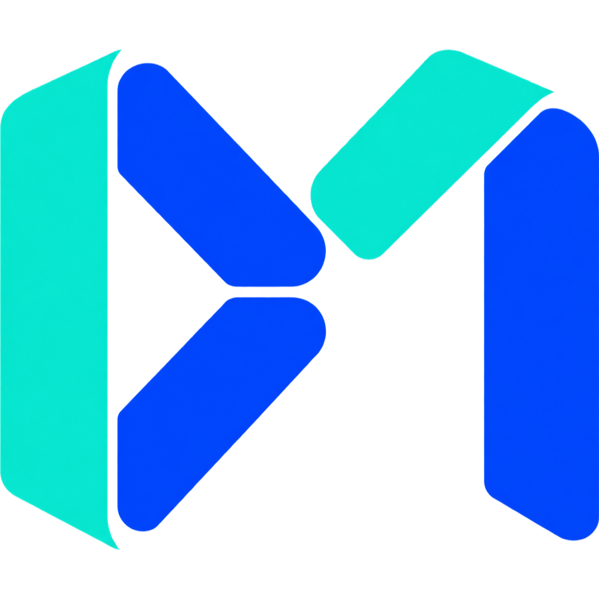

LLMS · CREATIVITY · INTELLIGENCE
Jun于珺
Exploring LLM as a creative tool,
and modeling intrinsic intelligence.
Hi, I’m Jun.
I’m interested in exploring generative AIs as a creative tool, emergent artificial life in complex dynamical systems, intrinsically motivated intelligence, and computer graphics.
I am currently a M.Sc. student at the Japan Advanced Institute of Science and Technology, advised by Prof. Haoran Xie, focusing on HCI studies. Before that, I obtained my bachelor’s degree at Sun Yat-sen University under the supervision of Prof. Ruixuan Wang, with some experience in deep-learning-based medical image analysis.
Education
Sun Yat-sen University
—
B.Mgmt.
School of Computer Science and Engineering
Advised by Prof. Ruixuan Wang
Experiences
Strategy Product Engineer
Shumei Technology Co., Ltd.
—

Research Interests
Generative AI
as a Creative Tool
Emergent Artificial Life
in Complex Dynamical Systems
Intrinsically Motivated
Intelligence
Graphics
& Physics Simulation
Projects
HydroLenia: Embedding Lenia in Physical Fluids
A mass-conserving variant of Lenia living inside a lattice Boltzmann fluid. Creatures are carried by the water and push back on it through a force dipole with zero net force, so their own motion stirs the currents that carry them.